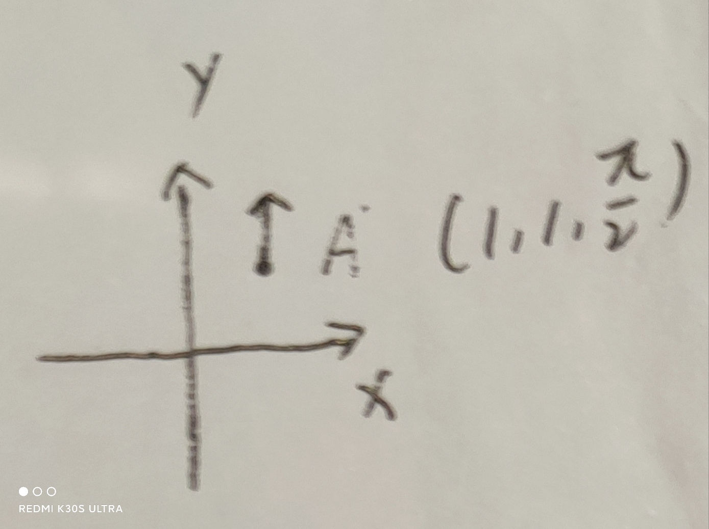

二维位姿变换
若坐标系B在坐标系W中的坐标为
则坐标系B到坐标系W的转换矩阵为
举例
切记：
A在local坐标系下的pose为A_local，图示为local -> A
A在global坐标系下的pose为A_global
T_localToGlobal = A_global * A_local.inverse() 图示为global -> local
假设有一个B，在local下的坐标系为B_local，则
B_global = T_localToGlobal * B_local
即B 在 global下的坐标 $T_{ref}^{tar}=T^B_{g}$，箭头指向global->B， 也称为B to global的变换
或者
第一种用的比较普遍
上面暂时不看，是和下边反着的，自己弄清除就好
念法：
lidar到imu的变换， $T^{lidar}_{imu}$，该lidar到imu的变换 乘以 点在lidar下的坐标为点在imu下的坐标
ROS 调用：
lookupTransform(imu, lidar)
例一
假设没有旋转，只考虑平移。B在W中的坐标为$(1,1)$，即上述的(1)为
假设有一个点P在B上的坐标为$(-1， 0)$， P在W上的坐标明显为$(0, 1)$。可以通过如下式子转换
即就是：$T^p_w=T_b^pT_w^b$
注意$T_w^b$称为从B到W的转换矩阵， B到P的转换阵 乘以 B上的点= P上的点
上述式（3）通过的是一个在B 上的点通过变换 变换到了W坐标系上，虽然是B到W的变换，但是变换的x和y却是B相对于W的。
例二
现在需要做两次变换，第一次平移$(1,1)$，再旋转90度到点A。第二次再平移$(1,1)$，不旋转到点B。
注意，点B在原来坐标系下的结果应该为$(0,2)$，旋转90度
即：第一次转换$p_a=(1,1,1.57)$，第二次转换$p_b=(1,1,0)$
首先，定义$x$轴为0度，那么，毫无疑问，A点应该是如下图所示


注意，这里A是点是旋转了90度的，因此，针对于点A来说，他的坐标系应该是如下图所示

因此，按照这个坐标系再移动$(1,1)$，就会得到原来坐标系下的$(0,2,1.57)$
如果做两次变换，则只需要简单的计算
需要注意这里的乘法顺序，后操作的乘在后边！！
注意这里是矩阵的乘法，就可以得到$(0,2,1.57)$
tf中的坐标变换
1 | buffer_->lookupTransform(tracking_frame_, frame_id, ::ros::Time(0.), |
假设tracking_frame是imu_frame, frame_id是odom，那么这样得到的变换是imu->odom, 即tracking_frame_到frame_id的坐标变换
即odom在imu frame下的坐标，或者称为变换
1 | buffer_->lookupTransform(target, source, ::ros::Time(0.), |
出来的结果为$T_{target}^{source} $，即target指向source的
规则
$T_{target}^{source}$ 箭头指向 target->source， 念为source到target的变换，也是source在target下的坐标
若一个点p通过旋转加平移得到点B，则这个旋转平移的变换为$T_p^B$。